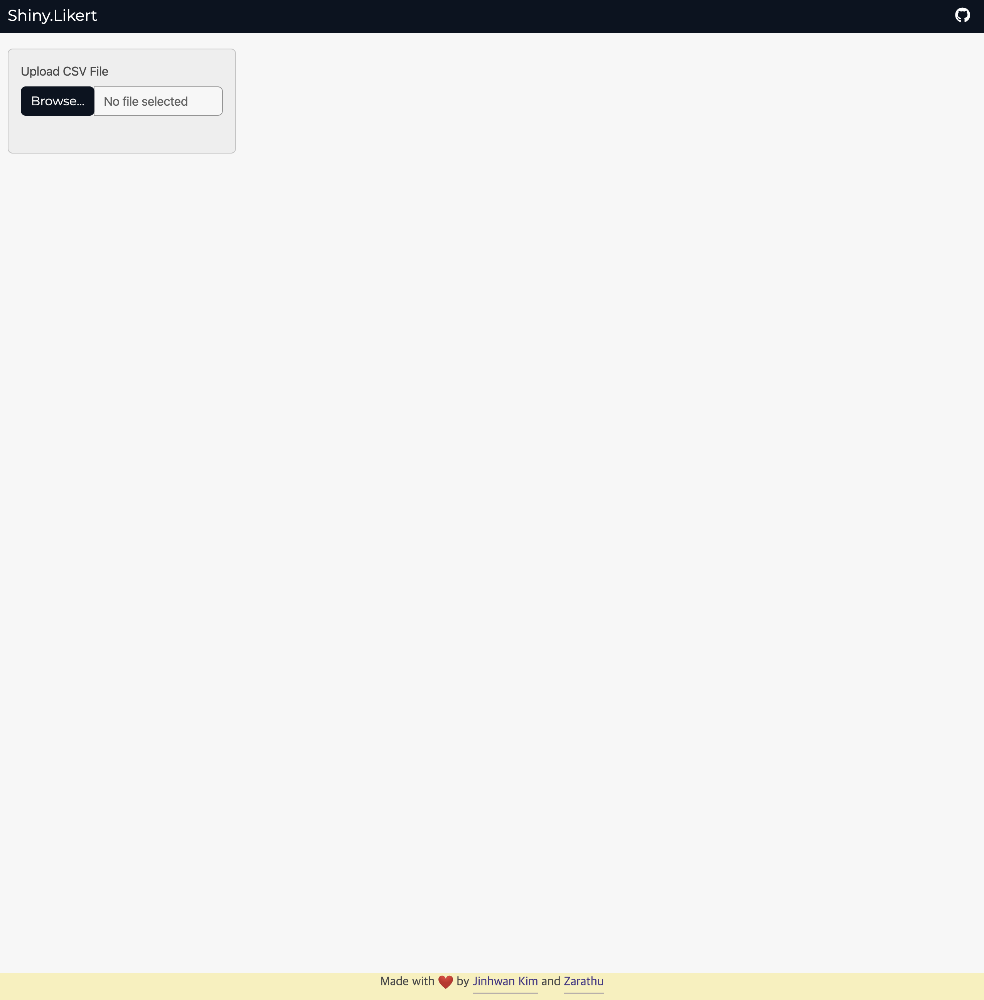
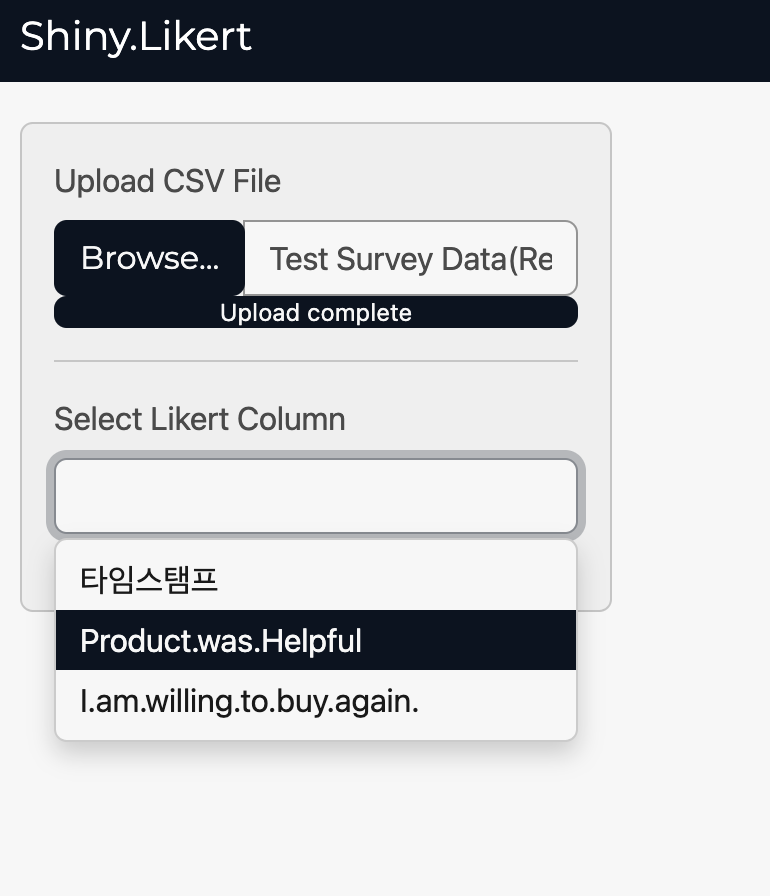
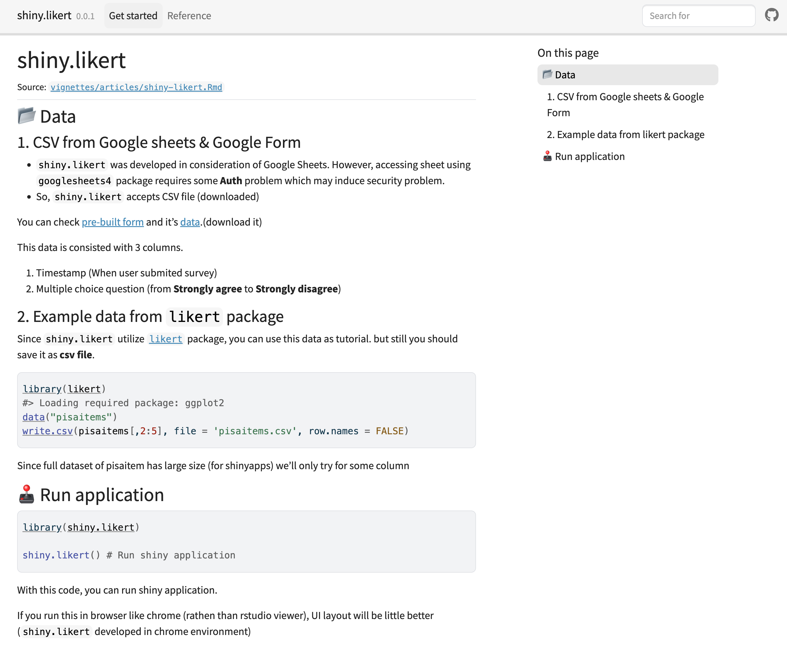

devtools::create_package(getwd())개요
이전 글을 보고 오면 이해에 조금 더 도움이 됩니다*
순서를 가진 범주형 데이터는 A~ E, 좋음 ~ 안좋음. 상위 10% ~ 하위 10%, NPS 1-10과 같은 예시들로 꼭 의료 도메인이 아니더라도 다양한 분야에서 활용되고 있습니다.
이러한 데이터를 수집하는 방법은 보통, 설문조사를 위해 쓰이는 Google Forms나 Typeform과 같은 온라인 설문조사 도구를 활용할 수 있습니다.
이제 이 결과를 활용하기 위한 방법은 정말 많지만, 설문 데이터를 시각화를 하는 방법은 대부분 의 경우 pie chart 혹은 barchart 정도만 활용하게 됩니다.


R이나 Python 과 같은 프로그래밍 경험이 없거나 혹은 google studio, tableau public과 같이 “상용 시각화 툴”에서 제공하지 않는 차트라면 likert chart와 같은 방법을 활용하는 것은 꽤나 골치 아픈 일입니다.
다행히 R에서는 Shiny라는 R의 기능을 웹으로 보내주는 라이브러리가 있고, 이를 활용하면 누구나 web application의 주소만 알고 있으면 해당 페이지에 접속하여 R의 기능을 사용하여 likert chart를 만들어 낼 수 있습니다.
이 글에서는 likert 패키지를 웹에서 사용할 수 있게 하는 shiny app을 만드는 과정에 대하여 가볍게 다뤄보겠습니다.
shiny design
UI 디자인에 대한 내용은 언급하지 않습니다.
shiny application에 제일 먼저 필요한 기능은 사용자의 설문조사 결과 데이터 (csv)를 업로드 하는 기능입니다.
처음에는 googlesheets4라이브러리를 사용하여 많이 쓰이는 google sheets를 url만 복사하여 사용하게 만드는 것도 고려했으나, 이렇게 하기 위해서는 해당 시트를 외부에 노출 하거나, 구글 권한 문제를 shiny에서 같이 해결해야하기 때문에 너무 복잡하여 고려하지 않고, 대신 다운로드 받은 csv만 작업할 수 있게 합니다.

이후 사용자의 혹은 예시로 github에 올려둔 데이터를 사용자가 업로드 하면 여러 column 중에 어떤 부분을 차트로 그릴지 선택해야 합니다.
다행히 likert 패키지에서는 항목만 같다면 여러개의 차트도 동시에 그릴수 있기 때문에 multiple select의 형태로 만들어줍니다.

column을 선택하고 나면, column의 내용과 차트 옵션이 나타납니다.

단, column의 내용. 데이터의 경우 좋음 ~ 안좋음. 동의함 ~ 동의하지 않음 등과 같이 사용자가 설계한 내용에 따라 다른 항목을 가질 수 있고, 이러한 항목의 순서가 likert에서는 중요하기 때문에 입력한 column의 순서를 사용자가 다시 바꿀 수 있게 구현합니다.

이후 옵션을 조절한 후 draw button 을 클릭하여 차트를 만들어낼 수 있습니다.
그러나 사용자는 처음에 어떤 옵션이 어떤 역할을 하는지 알 수 없기 때문에 차트가 만들어지고 난 이후에 옵션을 변경해도 차트에 반영되도록 구현합니다.

차트는 ggplot + plotly를 같이 활용하여 interactive하게 만들어 지기 때문에 사용자가 png로 다운로드하여 활용할 수 있게 구현합니다.

이 상태에서의 shiny application은 말 그대로 “works-on-my-machine ¯_(ツ)_/¯” 이기 때문에 이를 다른 사람도 웹에서 사용할 수 있게 배포를 해야합니다.
deploy shinyapps
shiny application을 배포하는 방법은 shinyapps.io, shiny server, Rstudio connect 3가지로 볼 수 있는데 각각의 특징은 이러합니다.
- shinyapps.io:
- posit의 클라우드 인프라를 이용한 배포 방식. Rstudio와 바로 연동하여 편리하게 올릴 수 있다는 장점이 있다.
- 다양한 요금제를 제공하며 무료 요금제의 경우 사이즈가 작은 shiny application을 5개까지 운영할 수 있다.
- shiny server:
- 자체 서버/인프라를 가지고 있는 경우(온프레미스) 이를 설치하여 배포하는 방법
- 비용이 들지 않음.
- Rstudio connect:
- 이전의 shiny server pro에 몇 기능을 더 추가한 옵션.
- Rstudio와 바로 연동하여 편리하게 배포 할 수 있다.
- commercial product이기 때문에 팀 단위로 비용이 든다.
다행히 shiny.likert는 복잡한 기능, 많은 패키지 등을 사용하지 않는 “가벼운” Application이기 때문에, 그냥 제 개인 shinyapps.io 계정에 배포를 해도 문제가 없습니다.
이 app을 배포하는 방법은 간단합니다. Rstudio에서 편집한, 잘 돌아가는 app.R로 이동하여 오른쪽 위의 connect 버튼을 누르고 이후의 몇번 더 클릭만 하면 됩니다. 물론 shinyapps.io 계정은 미리 만들어두어야 합니다.

몇분 정도 지난 후 배포를 마치고 나면 https://jhkim.shinyapps.io/shiny-likert/ 와 같은 주소를 통해 누구나 shiny.likert 패키지를 활용하여 likert chart를 만들 수 있습니다.
아래의 이미지는 shiny.likert를 이용하여 만든 이미지 입니다.

shiny app to R package
shinyapps를 통해 배포하는 방법은 편리하지만, 3가지 문제점을 가지고 있습니다.
- 사용량이 많은 경우 요금제가 막힘
- 클라우드 무료 요금제의 인스턴스는 로컬에 비해 성능이 많이 모자람 (물론 제약이 생길 정도까진 아닙니다)
- R을 사용할 수 있는 사람도 shiny.likert를 사용하기 위해 shinyapps만 사용해야함
물론 이 외에도 나중에 유지보수를 위해 로컬에서 작업해야하는 경우를 위해 package의 형태로도 개발하겠습니다.
이전에 만든 shiny package 중 하나는 끌어다 사용하는 라이브러리의 api 변화로 로컬에서 작동하게 하려면 최근 버전에 맞추어 수정을 해야합니다.
이 방법은 dean attali님의 아티클을 참조하였습니다.
- 현재 작업중인 디렉토리에 R Package를 생성
- R package의
Description을 변경.
-
Imports를 추가합니다.
-
inst디렉토리를 만들고,shinyApp이라는 디렉토리를 만들어 작업했던app.R이나www/styles.css를 이동합니다.
-
inst는 고정이고,shinyApp은 이름을 바꾸어도 상관없습니다.
-
R디렉토리에shiny.likert라는 함수를 추가합니다. 내용은 아래와 같습니다.
-
shinyApp과 package 이름shiny.likert에 주의합니다.
#' @importFrom shiny runApp
#' @export
shiny.likert <- function(){
appDir <- system.file("shinyApp", package = 'shiny.likert' )
shiny::runApp(appDir)
}- 이후 roxygen2를 활용하여 export등의 documentation을 하고, package를 build합니다.
그 결과, 아래의 코드를 통해 누구나 로컬에서도 shiny.likert를 활용할 수 있습니다.
remotes::install_github('zarathucorp/shiny.likert')
library(shiny.likert)
shiny.likert()github package
shiny.likert는 github에 올려진 R package이기 때문에 shinyreadme와 polaroid를 사용하여 readme.md를 수정하고, pkgdown을 활용해 사이트를 제작합니다.
pkgdown에서의 Get started는
pkgdown::build_article("shiny.likert", "shiny.likert")를 통해 만들 수 있습니다. 이외의 과정들은 별도로 설명하지 않으며, 결과는 아래와 같습니다.


Reuse
Citation
BibTeX citation:
@online{kim2023,
author = {Kim, Jinhwan},
title = {Shiny.likert {패키지} {소개}},
date = {2023-02-15},
url = {https://blog.zarathu.com/posts/2023-02-14-shiny.likert},
langid = {en}
}
For attribution, please cite this work as:
Kim, Jinhwan. 2023. “Shiny.likert 패키지 소개.” February
15, 2023. https://blog.zarathu.com/posts/2023-02-14-shiny.likert.